Chapter 7
Respiration
Unless otherwise cited, anatomical images used in the print version of chapters Seven, Eight, Eleven, and Twelve are original creations of the author, stock images used under license, or images from the Netter Collection used under license.
The respiratory system—or pulmonary system—is the power source and actuator of the vocal instrument. In this capacity, the lungs serve a function similar to the bellows of a pipe organ or the air bladder of bagpipes; in essence, they function as a storage depot for air. This is not, of course, the primary biological function of the respiratory system, which must perpetually oxygenate the blood and cleanse it of excess carbon dioxide to maintain life.
Fundamental Concepts
Respiratory Anatomy
The respiratory system is housed within the axial skeleton (figure 7-1), which is the portion of the human skeleton that consists of the spine and thorax (ribcage). The remainder of the skeleton, including the skull, pelvis, arms and legs is called the appendicular skeleton. Posture is largely a function of the relative positions and balance between these skeletal regions.
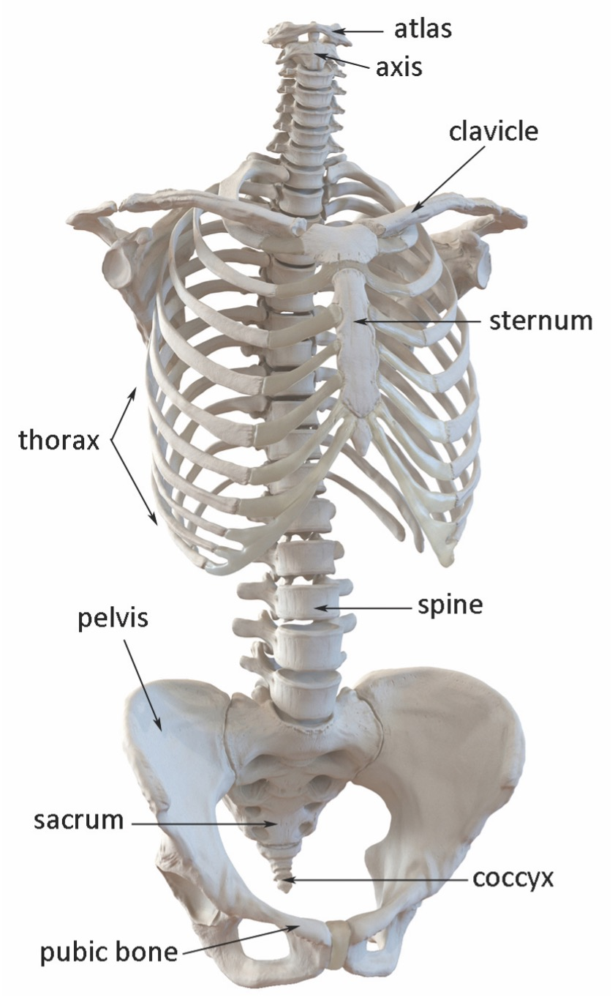
Figure 7-1: Female spine, thorax, pelvis (width of pelvis shows it is a female)
Spine
Discussion of the respiratory framework must begin with the spine itself, which consists of twenty-four individual bones called vertebrae. Stacked together to form a gentle “S” curve in the anterior/posterior plane, the vertebrae gradually become larger from the top to the bottom of the spinal column. The lowest five are called the lumbar vertebrae. These are the largest and thickest bones in the spine and are responsible for carrying most of the weight of the upper body. Curvature in this region acts as a shock absorber, helping to prevent injury during heavy lifting (Figure 7-2). Thoracic vertebrae make up the next twelve segments of the spine. These bones are somewhat smaller than the lumbar vertebrae and possess flat areas called facets for the attachment and articulation of the ribs.
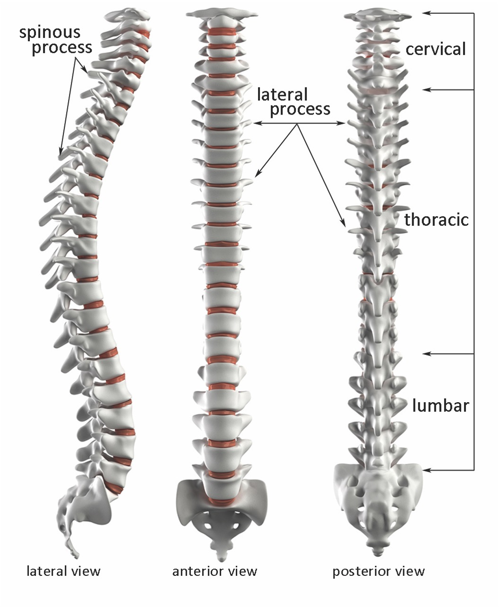
Figure 7-2: Spine
The seven cervical vertebrae complete the top of the spine. The topmost cervical vertebra is called the atlas and is specially shaped to fit snugly into the base of the skull and carry the weight of the head. The second cervical vertebra, called the axis, features a projection from its anterior segment called the dens or odontoid process that inserts into the atlas. Together, these two vertebrae provide a pivot around which the skull can be tilted and rotated.
Each vertebra—except the atlas—has a small projection from its posterior called a spinous process that serves as an attachment point for muscles of the back. In the lumbar region, these projections are robust and somewhat stubby, extending nearly at a right angle to the spine. In the thoracic region, the spinous processes are longer and extend obliquely downward from the spine. The spinous process of the seventh cervical vertebrae is particularly large and can easily be seen or felt in most people, especially while bending over. This provides a landmark for the division between the cervical and thoracic regions and can be useful in establishing correct posture. Two transverse processes extend laterally from each vertebra.
At the base of the spine, five sacral vertebrae are found, which are fused together to form the sacrum. An additional five, very small vertebrae, which also are fused together, extend beyond the sacrum to form the coccyx or tailbone. The sacrum joins with a group of bones called the ilium, pubis and ischium to create the pelvis, a very strong structure that serves as the attachment points for the lower extremities and as a girdle for the contents of the abdomen.
Knowledge of the structure, shape and attachments of the spine has significant pedagogic consequences. It must be remembered that the spine has a natural, s-shaped curve. While this curve should not be exaggerated, as seen in severe cases of lordosis (swayback), it should also not be removed and straightened artificially. At least one prominent text on singing technique instructs that correct posture can be established by leaning against a wall with the knees bent and the feet placed several inches forward. The singer then presses the small of his back into the wall, making it as straight as possible. Finally, he is to stand up while maintaining the same vertebral posture—and sing (McKinney, 1994). While this technique might be somewhat beneficial for the correction of lordosis, the impact on normal bodies is contrived and unnatural.
When the entire skeleton is considered, another significant pedagogic implication becomes clear: the central pivot point for bending forward is located at the joint between the pelvis and the hips, not at the waist. Many singers and teachers use breathing exercises that include bending over to increase awareness of abdominal movement during respiration. If students are instructed to bend forward from the waist, the exercise compresses the abdominal area and actually inhibits free breathing. If, however, the singer bends forward from the hips while deliberately elongating the spine, space is created for the abdomen to release fully, making the exercise much more effective.
Thorax (ribcage)
The thorax or ribcage[1] houses the lungs and heart. It consists of twelve pairs of ribs that attach to the thoracic vertebrae through flexible joints that permit movement up and down (in spite of what is implied in Genesis, men and women have the same number of ribs). Limited movement also is possible in the anterior/posterior plane. The top four pairs of ribs attach individually to the breastbone or sternum hrough the flexible connection of the costal cartilage; ribs five through ten all share a common cartilaginous connection to the sternum (Figure 7-3).
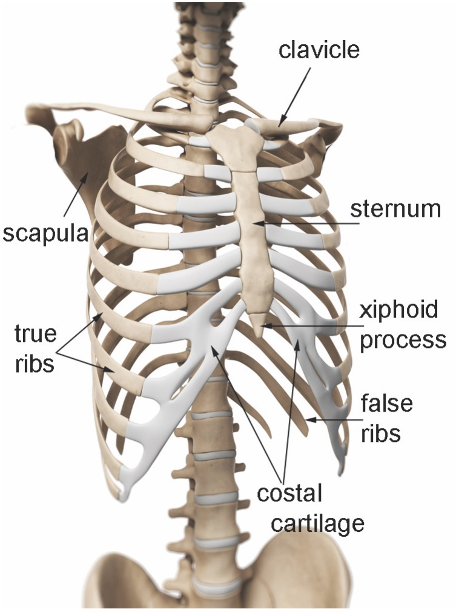
Figure 7-3: Thorax
The bottom two ribs are free-floating, with no connection to the sternum and sometimes are referred to as false ribs. The sternum itself consists of two bony plates called the manubrium and the corpus. The joint between these plates is flexible at birth, but fuses solid by the time we reach adulthood. At the base of the corpus, a small projection called the xiphoid process is found, to which some of the abdominal muscles attach.
The flexible connections of the ribs to the spine and sternum allow for a significant range of motion. Through contraction of respiratory muscles, the entire thorax can be raised and depressed, and made larger or smaller in circumference; all of these dimensional changes result in either inhalation or exhalation.
Lungs
Why do dimensional changes of the thorax result in breathing? The answer lies in an old axiom you might remember from your school days: nature abhors a vacuum. The lungs, which lie within the thorax, are organs, not muscles, and therefore do not have the ability to move of their own accord. However, they still must be enlarged for inhalation and made smaller for exhalation. This can occur only because the lungs are coupled to the interior wall of the thorax by action of the pleura, or pleural sac. The pleura is a serous membrane (water permeable) that causes the thorax and lungs to adhere to each other with a flexible connection that has much more in common with a wet plastic bag adhering to a window than to double-sided adhesive tape. Because of the pleurae, dimensional changes in the thorax are transferred directly to the lungs; if the thorax gets bigger or smaller, the lungs do the same.
To better understand how a vacuum is created in the lungs, we must make a brief visit to the realm of physics. Robert Boyle, a 17th-century British scientist, discovered that when a gas, such as air, is contained in an enclosure, pressure and volume are inversely proportional (if one goes up, the other goes down). This is easily visualized through a syringe. When the plunger is depressed, volume in the syringe becomes smaller and pressure inside increases; conversely, when the plunger is withdrawn, volume is increased and pressure is reduced. Because of these relationships, fluid is drawn into the syringe when the plunger is withdrawn and is ejected when it is depressed.
To inhale, the volume capacity of the thorax and lungs must be increased. This, according to Boyle’s Law, results in a decrease in air pressure. In fact, the air pressure in the expanded lungs becomes lower than atmospheric pressure—a vacuum has been created. Air rushes in to fill this vacuum and create equilibrium between the pressures inside and outside the lungs. Exhalation reverses this process. The thorax and lungs are made smaller, decreasing their volume and thereby increasing air pressure. Air in the lungs now rushes out to equalize lung and atmospheric pressures. Because of Boyle’s Law, whenever the volume capacity of the thorax and lungs is increased, inhalation occurs; whenever it is decreased, exhalation occurs. It is extremely important to remember this cause-and-effect relationship of expansion and contraction during breathing. Expansion of the chest and/or abdomen upon inhalation causes air to rush in and fill the lungs by creating a partial vacuum; expansion is never the effect of air entering the lungs (unless the person is breathing with the mechanical support of a ventilator).
The lungs themselves are made of porous, spongy material. The right lung is composed of three separate sections, called lobes; the left lung must compete for space with the heart and therefore is slightly smaller, having only two lobes (Figure 7-4).
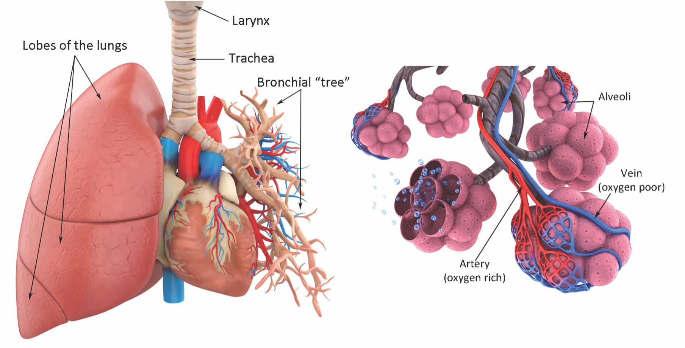
Figure 7-4: Pulmonary organs
Air comes into the lungs through the trachea (windpipe), which divides into two separate bronchial tubes. These further divide into lobar bronchi, which insert into the individual lobes of each lung. Once inside the lungs, the bronchi divide into smaller and smaller segments, eventually arriving at the alveoli or alveolar sacs, which is where the actual exchange of blood gasses occurs (7-4). The alveoli are highly compressible and are responsible for much of the elasticity of lung tissue. Healthy, mature lungs contain vast numbers of individual alveoli—about 300 million per lung (Kent, 1997). If we could remove and spread them out, they would cover the surface of a tennis court!
Primary Inspiratory muscles
We now know that the thorax must be made larger to induce inhalation. We also know that muscles are capable of only one motion: contraction. How is it then that something is made larger through contracting—isn’t this a paradoxical contradiction?
The most important muscle of inhalation is the diaphragm. This is the second largest muscle (measured by mass) in the human body—in most people, only the gluteus maximus muscles are larger. Shaped like a dome or an old-fashioned, round parachute with two small humps, the diaphragm bisects the body, separating the contents of the thorax from the abdomen. In this location, it serves as the floor to the thorax. With help from the pleurae, motion of the diaphragm is transferred directly to the lungs. On contraction, the diaphragm lowers and becomes somewhat flatter, increasing the volume capacity of the thorax and lungs, an effect similar to withdrawing the plunger of a syringe.
Many people have misconceptions about the location and size of the diaphragm. Because it is located deep within the thoracic/abdominal cavity and cannot be touched or felt externally, it often is believed to be smaller in diameter and lower in placement than is correct. Often these misconceptions arise from the best intentions of voice teachers or choir directors who teach breathing by placing a hand on the belly and telling students to “breathe from their diaphragm.” Recipients of this instruction naturally assume the outward movement of the abdominal wall is the actual diaphragm. Even well-educated singers often believe the diaphragm lies lower in the torso than it actually does. In reality, the diaphragm extends upward in a gentle dome from its attachment point at the bottom of the sternum; the stomach and liver lie directly below, covered by the diaphragmatic dome like an inverted bowl. When viewing the entire torso, as in Figure 7-5, the diaphragm is seen to reside at a position about one-third the distance from the clavicles to the pubic bone.
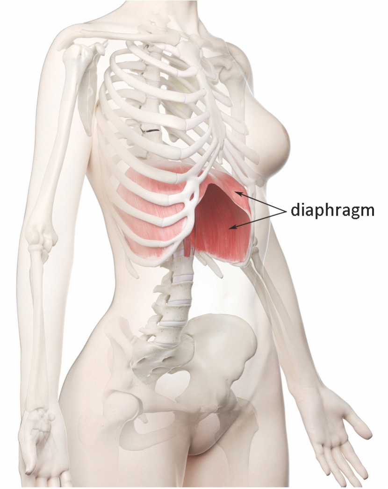
Figure 7-5: Diaphragm
The diaphragm attaches anteriorly to the sternum, laterally to the costal cartilages and ribs seven through twelve, and posteriorly to the upper lumbar vertebrae through the pillars of the diaphragm. The pillars (or crura) are long and thick muscle bands that run vertically from the spine to the posterior of the diaphragm. Muscle fibers in the diaphragm originate from all these attachment points and insert into the central tendon, a strong, fibrous portion of the muscle that is shaped somewhat like a boomerang (Figure 7-6).
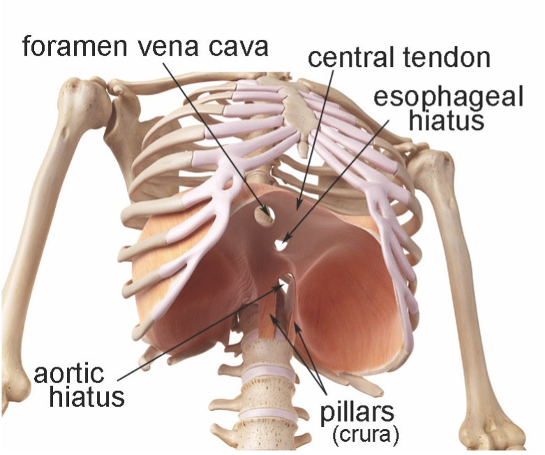
Figure 7-6: Strctures of the diaphragm (inferior view)
Because this muscle completely bisects the body, openings must be provided for the passage of blood and food. Fresh blood is carried to the lower body by the aorta, the largest artery in the body. The aorta passes through the diaphragm at the aortic hiatus, which is located in the center, posterior of the muscle, quite close to the spinal column. Diaphragmatic movement during respiration is minimal at this location. Oxygen-depleted blood returns from the lower body to the lungs and heart through the vena cava. This passes through the diaphragm at the foramen vena cava, which is located in the right-center portion of the central tendon (in superior aspect). The esophagus, which transports food to the stomach, passes through the diaphragm at the esophageal hiatus. It is not uncommon for people to experience problems with the esophageal hiatus, especially through a condition known as a hiatal hernia, in which the esophagus or upper stomach bulges through the hiatus to the wrong side of the diaphragm, sometimes painfully. Severe cases of hiatal hernia can be surgically corrected.
While the diaphragm is one of only two unpaired muscles in the human body, it does possess some aspects of duality. For example, it is provided with two separate blood supplies, and signals from the brain are sent to it through the two phrenic nerves. For unknown reasons, a common misconception has arisen among many singers and voice teachers that the phrenic nerve originates from the vagus nerve. Perhaps this is wishful thinking, as the nerves that serve the larynx originate from the vagus; were the diaphragm innervated in the same chain, a direct neurologic link between respiration and phonation would exist. In reality, the phrenic nerves originate from the fourth cervical nerve.
As previously stated, the diaphragm lowers and becomes somewhat flatter when it contracts (7/1). The range of motion is about one-and-a-half centimeters during quiet breathing to as much as six or seven centimeters (a little less than three inches) during deep breathing. In an average-sized adult, about 350 cubic centimeters of air will be inhaled for every centimeter the diaphragm lowers (Zemlin, 1998). Therefore, during deep breathing, diaphragmatic movement alone should draw nearly two-and-a-half liters of air into the lungs (7cm multiplied by 350cc).
Media 7/1: Animation of respiration and movement of diaphragm
Strictly speaking, the diaphragm is a voluntary muscle. It is not, however, a muscle over which most people exert direct, conscious control. Singers learn to have a degree of control of its movement through sensations in the abdomen and thorax during breathing. When it contracts, the diaphragm lowers into the abdomen, pressing down against its contents, which are called the abdominal viscera. Unlike the spongy, elastic lungs, the viscera are mostly incompressible—like water in a water balloon or hot water bottle. When something presses against it, it cannot be squished into a smaller space but must be displaced. The result of this displacement is the bulging abdomen (or back) often seen during inhalation in trained singers. We are not directly aware of the action or location of the diaphragm during this process; we are only aware of what it has done to something else.
Biologically, the diaphragm is exclusively a muscle of inspiration; for the vast majority of people, it is entirely passive during exhalation, but might engage during phonation to limit breath pressure and airflow. Its normal action is to contract for inhalation and relax with exhalation, quickly returning to its resting position through a process called elastic recoil (during restful tidal breathing, elastic recoil is sufficient to cause exhalation). Many singers, however, maintain varying diaphragmatic contraction during exhalation to use as a muscular antagonist in breath support. But please remember, it is pedagogically incorrect (and physiologically impossible) to say that the diaphragm pushes air out of the body during singing.
The diaphragm, as important as it is, is not the only significant inspiratory muscle; it is strongly assisted by a group of muscles called the external intercostals (Figure 7-7). They are called external muscles not because they are on the exterior of the thorax, but because they are the outermost layer of muscles within the thorax that control movement of the ribs. Each external intercostal originates from the rib above and inserts into the rib below. On contraction, the lower rib is drawn upward and outward in a swinging motion. As a result, the entire thorax is lifted and expanded in circumference.
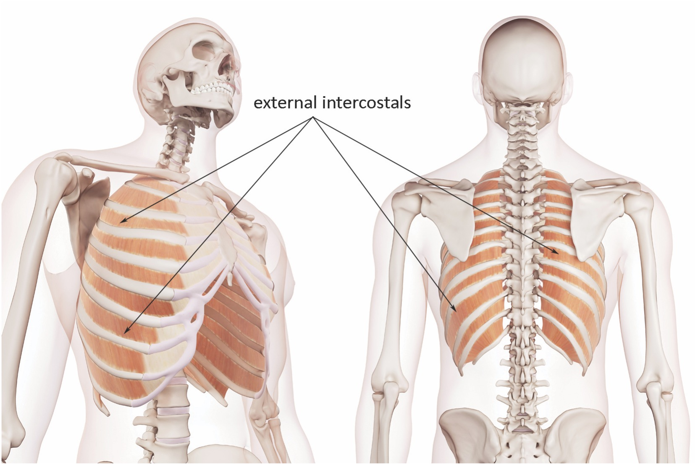
Figure 7-7: External intercostal muscles
The external intercostals are oriented in an oblique direction toward the midline of the body. You can approximate their direction of travel by placing your right hand on the right side of your chest with your fingers pointing toward your navel; your fingers and the muscles are at the same oblique angle.
The external intercostals cover a substantial surface area within the thorax. Viewing the thorax in horizontal cross section with the spine in the 12:00 position (as on the face of a clock), external intercostals extend throughout the regions between 12:00 and 4:00 on one side and 8:00 through 12:00 on the other.
The external intercostals, and indeed almost all the remaining respiratory muscles, are strongly voluntary. Most people are quickly able to learn their direct control independent of the breathing process simply by deliberately expanding the circumference of the thorax.
Primary Expiratory Muscles
During everyday living, exhalation is a passive activity, especially when the body is at rest. Ordinary people—those who are not trained as pulmonary athletes the way singers are—inhale by gently contracting the diaphragm while simultaneously lifting the entire thorax. Because it is accompanied by lifting the upper chest, clavicles, and shoulders, this technique often is called clavicular breathing. In this breath, the natural elastic recoil of the lungs and diaphragm, along with the weight of gravity pressing down upon the thorax are sufficient to generate adequate respiratory force. As physical exertion increases, however, additional actions are required to induce and control the expulsion of air from the lungs. This is particularly true in breathing for singing. Six different sets of muscles can be considered primary for exhalation; not all, however, are used by every singer or for every variation in breathing technique.
The internal intercostal muscles are found on the inside of the thorax directly underneath the external intercostals (Figure 7-8). Muscle fibers run obliquely away from the midline of the body, crisscrossing their external neighbors and thereby acting as direct antagonists. Once again, you can use your hand to approximate the orientation of the internal intercostals in the body; this time, however, cross your right hand over to the left side of your thorax with the fingers pointing down toward your hip. Your fingers will now point in the general direction of the internal intercostals.
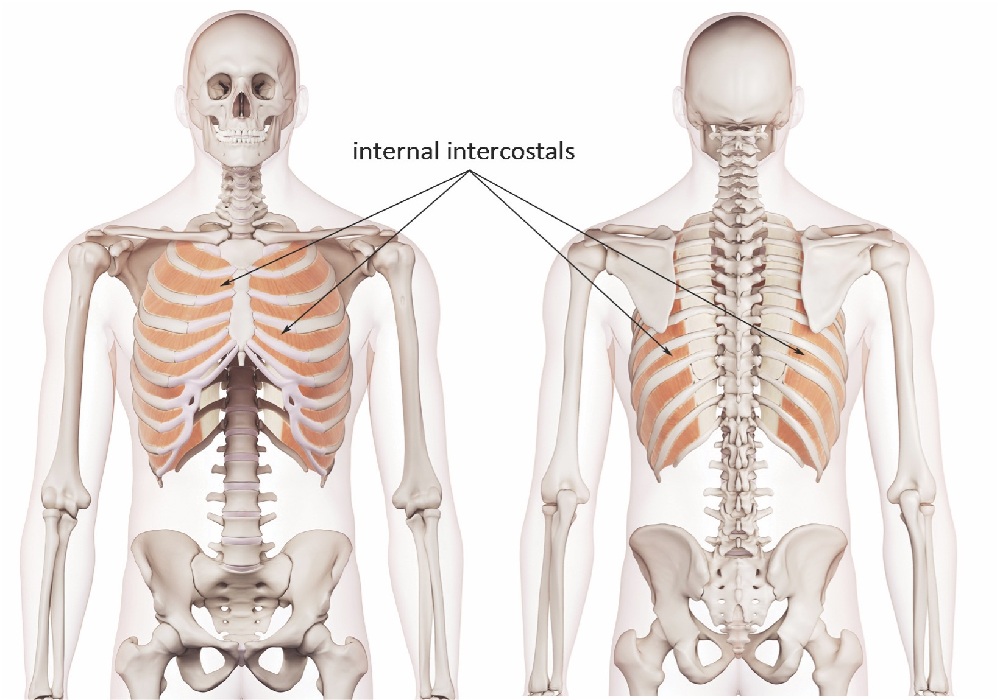
Figure 7-8: Internal intercostal muscles
Each internal intercostal muscle originates from the lower rib and inserts into the rib above it. Upon contraction, the higher rib is pulled down and inward toward the lower rib, depressing the ribcage and decreasing its circumference. This, as we know, increases pulmonary pressure and induces exhalation. Compared with the external intercostals, the internal muscles lie in a more anterior orientation within the thorax. If their location is again compared with the face of a clock, they occupy the space between approximately 2:00 to 5:00 in one hemisphere and 7:00 to 10:00 in the other.
Internal Intercostals are voluntary muscles whose control can be learned through the deliberate squeezing of the thorax. In most singing pedagogies, however, their contraction is delayed as long as possible, only becoming significant at the ends of very long or extremely loud phrases. We delay engaging these muscles because strong initial contraction over-pressurizes the breath, which leads to a pressed, strident sound, or—paradoxically—a breathy tone (the reason either of these results is possible is discussed in Chapter 8).
For many singers, muscles located in the abdomen are more important than the intercostals for the control of breath. Five significant pairs of muscles are found in this region: the external oblique, internal oblique, rectus, and transverse abdominis (or abdominal) scles, all of which are located primarily in the anterior and lateral abdomen; and the quadratus lumborum, which lies in the lower back. All of these muscles contribute to expiration either by depressing the thorax, or by compressing the abdominal viscera upward against the underside of the diaphragm to help deflate the lungs.
The four sets of anterior abdominal muscles form a complex, interlaced structure that has great strength and flexibility. At its center lies the paired rectus abdominis (Figure 7-9). These long muscles have fibers that run longitudinally (in the rectus orientation as discussed in the previous chapter), originating from tendons attached to the pubic bones and inserting into the cartilaginous portions of the fifth through seventh ribs and the xiphoid process at the base of the sternum. Each rectus is divided into four sections, called bellies, which can be contracted simultaneously or independently (belly dancers take advantage of this independent contraction to make their abdominal wall ripple up and down).
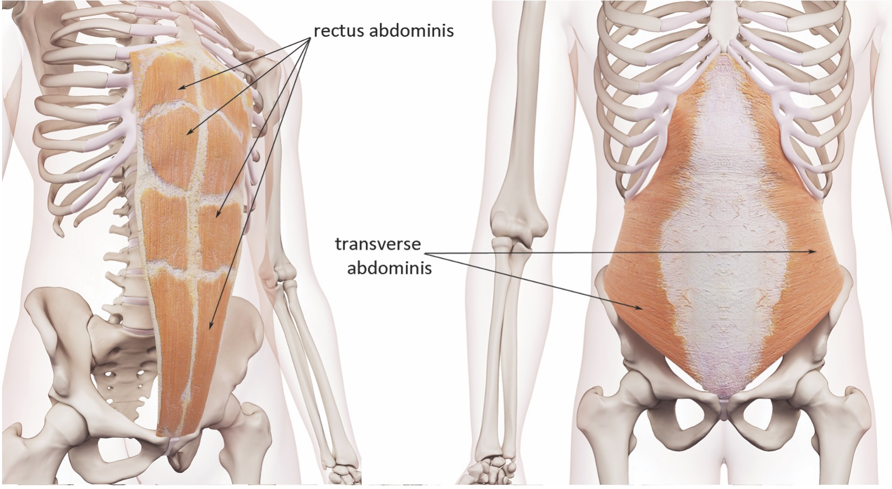
Figure 7-9: Rectus and transverse abdominals
When the rectus is contracted, the thorax is pulled toward the pelvis, arching the back forward. Many people use exercises such as sit-ups, crunches and leg-lifts to strengthen the rectus. Carried to the extreme, these exercises result in the “ripped” abdomen or “six-pack” sometimes associated with body builders. Strenuous exercise of the rectus probably has little positive effect for singers beyond the improvement of physical appearance. Since its action is to shorten the distance from the pubis to the thorax, contraction of the rectus does little to compress the viscera when appropriate singing posture is maintained. Overdevelopment of these muscles, however, can be problematic. Efficient breathing requires tension in the abdominal muscles to release immediately prior to inhalation; if the abdominal wall remains firmly contracted, there is nowhere for the viscera to go when the diaphragm descends. For this reason, singers who are particularly body and appearance conscious—something that is extremely helpful when it comes to casting for operas—must balance contraction and release of the abdominal muscles during their physical workouts.
Surrounding the rectus muscles is a tendinous sheath formed by the division of the abdominal aponeurosis, which extends from the sternum to the pubis. The remaining anterior abdominal muscles all attach to the aponeurosis at the lateral edges of the paired rectus. Muscles normally attach to bones, cartilage, tendons, or ligaments; they do not interconnect with each other. The aponeurosis provides a way for the abdominal muscles to link together while maintaining their independence. Its function is a little like the handkerchief used in folk dancing traditions that prohibit men and women to touch while dancing; by holding opposite ends of the hankie, they dance together while observing the no-touch tradition.
The three remaining pairs of anterior abdominals encircle the lower torso from the spine to the rectus. Beginning with the outermost layer, we find the external oblique abdominis muscles (Figure 7-10). Like the external intercostals, these muscles have oblique fibers that run downward toward the midline of the body. They originate from the exterior thorax, attaching to ribs five through twelve, and insert into the iliac crest of the pelvis and the abdominal aponeurosis adjacent to the rectus muscles. Because they cover the largest surface area of any of the abdominal muscles, the external obliques are particularly important expiratory muscles for singers.
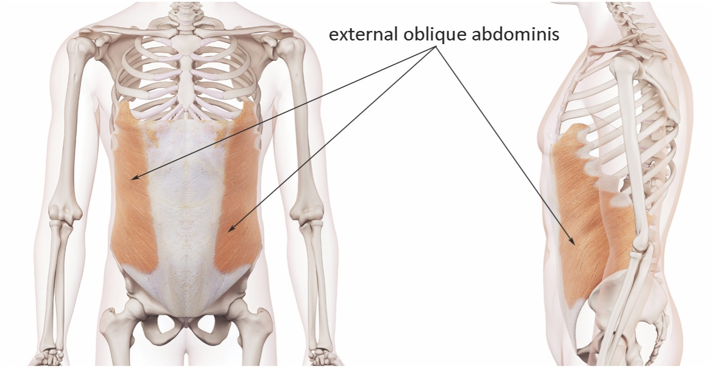
Figure 7-10: External oblique abdominals
Continuing more deeply into the torso, we find the internal oblique abdominis muscles, with fibers in the upper portion that run approximately perpendicular to those of the external obliques; in the lower part of the muscle, the fibers become nearly horizontal in orientation (Figure 7-11). They originate from the iliac crest and the inguinal ligament—a ligament that runs from the pubic bone to the iliac crest, also called the groin ligament—and insert into the aponeurosis and the thorax at ribs nine through twelve.
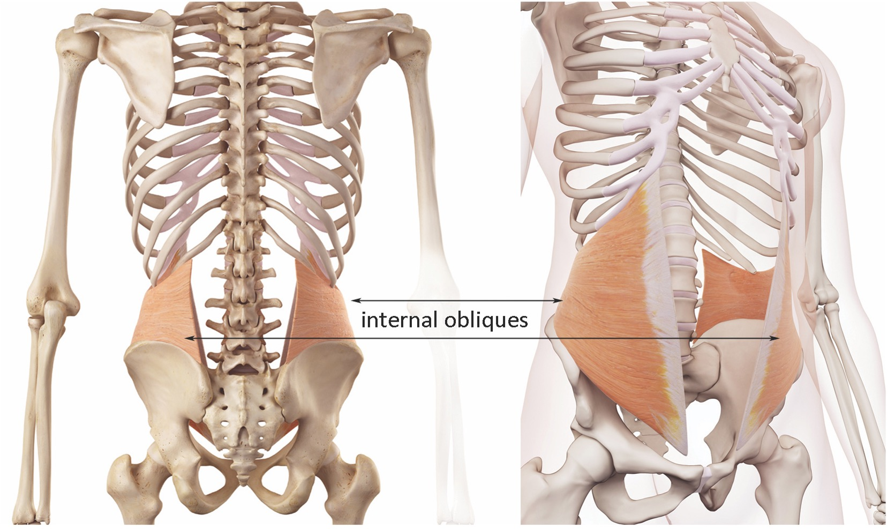
Figure 7-11: Internal oblique abdominals
The deepest layer of abdominal muscle is the transverse, whose fibers run horizontally from the rectus muscles to the spine (Figure 7-9). Like the internal obliques, the transverse muscles have attachments to the inguinal ligament, the iliac crest and the aponeurosis; at the top, however, they are located in the interior of the thorax where they attach to ribs six through twelve and interlace with portions of the diaphragm.
According to Zemlin, the expiratory functions of the various abdominal muscles are not uniform:
“Because of their attachments and courses, the abdominal muscles probably do not all contribute to expiratory activity to the same degree. On mechanical grounds, the oblique muscles are probably the more effective in depressing the ribs, while the transverse abdominis muscles are more effective in compressing abdominal contents” (Zemlin, 1998).
This is good news for singers; to maintain effective breath support, possibilities must exist for antagonism between the muscles of inspiration and expiration. This can occur between the external intercostals, which elevate the ribs, and the oblique abdominals—both internal and external—which depress the ribs. Additional applications of muscular antagonism in breathing will be discussed later in this chapter.
The final primary expiratory muscle is located in the posterior abdomen (lower back), the quadratus lumborum (Figure 7-12).
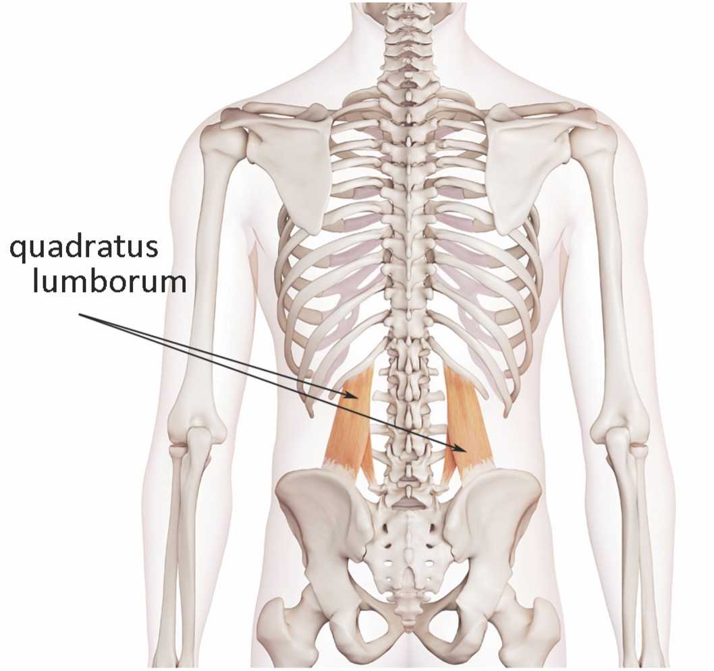
Figure 7-12: Quadratus lumborum
Named for its rectangular shape (quadratus) and location in the lumbar region (lumborum), these muscles originate at the crest of the iliac and insert into the lowermost rib and the transverse processes of the lumbar vertebrae. Two respiratory functions are possible. Through their attachment to the base of the thorax, they may help stabilize that structure against the downward pull of the diaphragm. More importantly for singers, they act somewhat like a girdle around the lower back, helping to direct the viscera upward toward the diaphragm during contraction of the abdominal muscles. The quadratus muscles also serve an important postural function, stabilizing the lower back.
Breathing Techniques
Having explored the primary respiratory muscles, we now are equipped to examine the manner in which they are used during breathing for singing. Almost all voice pedagogues agree that four principal methods of breath management can be described: clavicular (upper chest), thoracic (lower chest), abdominal (belly breathing) and a balanced breath, often now called appoggio, which is a combination of the latter two. Each of these methods can be used to provide breath support for singing and to aid in breath control.
What is the difference between support and control in breathing? According to James McKinney, author of The Diagnosis and Correction of Vocal Faults, they are independent, yet related functions. Breath support is best described as the dynamic relationship between the muscles of inspiration and expiration that are used to control pressure in the air supplied to the larynx. Support, therefore, is a pulmonary function. Breath control, however, is a laryngeal function (McKinney,1994). The two vocal folds, which together form the structure known as the glottis, serve as a valve that regulates airflow through the larynx. Breath control is determined by the efficiency of this regulation; the lower the flow rate, the higher the efficiency. We might say that breath support enables the production of beautiful sounds; breath control allows those sounds to last to the end of long phrases
The first breathing method we will explore, clavicular breathing, has few advocates among voice professionals, even though this is the breathing method often seen in the general population and is extremely common among beginning singers (7/2).
Media 7/2: Clavicular breathing
Inhalation is caused by a pronounced elevation of the upper chest, which is induced by lifting the shoulders and clavicles— hence, the name clavicular breathing. These same structures drop during exhalation. Muscularly, inhalation is induced by a contraction of the diaphragm, accompanied by contraction of any of the various muscles that lift the upper chest and shoulders, such as the levator scapulae, scaleni, and trapezius. (Secondary respiratory muscles will be discussed in detail later in this chapter.) Exhalation generally relies on the natural elastic recoil of the lungs and diaphragm, assisted by the weight of gravity pushing down upon the ribcage. During forced exhalation, as found in heavy exertion or loud singing, the internal intercostal muscles also might contract, squeezing the thorax to help compress the lungs.
Why do professional singers and singing teachers discourage the use of this breath? If it successfully keeps billions of people alive and well every day, shouldn’t serve singing equally well? In spite of what many of us would suspect, the answer does not lie in the amount of air drawn into the lungs. Indeed, many singers actually get a larger breath through the clavicular technique than with any other breathing method.[2] The problem with clavicular breathing lies not in capacity, but in the ability to control air pressure during exhalation.
To produce beautiful sounds, singers must be able to adjust the pressure of the air that powers the vibrating vocal folds carefully and accurately. Ideally, this regulation is accomplished through the use of muscular antagonism, as described in the previous chapter. Unfortunately, clavicular breathing offers few—if any—opportunities to establish this antagonistic control. This is exacerbated by the fact that the high potential capacities of clavicular breathing lead to overfilling and over-pressurizing the air, especially at the beginning of long phrases or prior to climactic high notes. As a result, the larynx itself must act as a valve to help regulate air pressure. Subglottal pressure is reduced by opening the valve wider or for a longer time; closing it more tightly increases pressure. These valving actions help explain why all young singers who breathe clavicularly do not share the same vocal problems: those who squeeze the glottis to resist high subglottal pressure sing with a tight or pressed vocal quality; those who relieve surplus pressure by opening the glottis wider sing with breathy sound.
In the twenty-first century, very few classically trained professional singers use clavicular breathing, but singers from earlier times often reported using this technique—perhaps out of desperation or necessity. Think for a moment of women’s clothing during much of the nineteenth and early twentieth centuries. Fashionable women almost always were securely bound in a corset. As you can well imagine, and as those sopranos and mezzos who have been subjected to authentic period costumes can attest, the constriction caused by a corset makes any breathing technique other than clavicular very difficult. (My female colleagues tell me that it is essential to take and hold the biggest, lowest breath possible during the lacing of the corset.)
In terms of regulating air pressure for optimal breath support, thoracic breathing offers significant advantages over clavicular (7/3).
Media 7/3: Thoracic breathing
Thoracic breathing relies on contraction of the diaphragm and external intercostal muscles during the inhalation process. The resulting expansion is felt in the lower ribcage, generally centered at the base of the sternum, but perhaps extending down to the epigastrium (the region between the sternum and the navel, often also called the solar plexus). Exhalation is caused by the release of the diaphragm and the contraction of the internal intercostal muscles. Movement of the ribs during thoracic breathing differs greatly from that seen in the clavicular breath. Instead of the entire chest heaving up and down, intercostal contraction is used to increase the circumference of the thorax, particularly in the regions from ribs six through twelve; upper portions of the chest might move little or not at all.
Thoracic breathing offers excellent opportunities for the regulation of air pressure through muscular antagonism. The thorax is stabilized through simultaneous contraction of the external and internal intercostal muscles during exhalation, resulting in a high degree of control over pulmonary pressure. Here is a simple exercise to help develop this control:
Extend your thumb and forefinger around the sides of your thorax at about the level of the end of the sternum. Now, take a deep breath, deliberately expanding your ribs outward into your hands. (If you are a real “belly breather,” you might have to limit the amount of abdominal expansion you typically use.) Strongly exhale on a sustained hiss while consciously maintaining the outward expansion of the ribs. It might take a few tries, but eventually you should begin to feel the resistance offered by the external intercostals, which are helping to prolong the flow of air and preventing it from all whooshing out at the onset of exhalation. Many singers find this technique particularly useful when extremely long phrases must be sustained on a single breath.
The third principal breathing technique is abdominal breathing (7/4).
Media 7/4: Abdominal breathing
Singers who employ this method rely solely on diaphragmatic contraction for inhalation. This contraction, however, is accompanied by simultaneous relaxation of one or more pairs of abdominal muscles. As the diaphragm descends, it must displace the incompressible abdominal viscera; relaxation of abdominal muscles allows this displacement to occur. The result is an obvious outward movement of the abdominal wall. If the rectus is relaxed on inhalation, movement will occur in the anterior of the abdomen in the epigastric or hypogastric region (the area between the naval and pubic bone), depending on which bellies of the muscle are released. If the obliques and transverse muscles are relaxed, expansion will be directed more to the sides. If the quadratus lumborum is relaxed, the bulge moves into the lower back. If all five muscles relax, expansion is evenly distributed around the entire lower torso.
Singers who employ a strong abdominal component in their breathing are seen to expand in all the different ways cited in the previous paragraph. Some general observations, however, can be made. Women often place their expansion significantly lower in the anterior abdomen than do men, often centered in the hypogastric or pelvic region well below the navel. Men, however, often center their expansion in the epigastrium. Why this difference? It probably is related to anatomical differences between the sexes, specifically: the presence (or absence) of the uterus, the shape of the pelvis, the distance from the hipbone to the lowest rib, and the width of the thorax (McCoy, 2005).
Exhalation in abdominal breathing is caused by contraction of abdominal muscles pulling in against the viscera, which in turn press the diaphragm back to its resting position. This is the only situation under which the diaphragm is able to exert an expiratory force—but remember that other muscles actually are doing the work, not the diaphragm itself.
Because the oblique muscles attach to the lower thorax, muscular antagonism may be possible with the external intercostals. Alternately, some singers are capable of sustaining a degree of diaphragmatic contraction during exhalation. In this case, antagonism would exist between the abdominals and the diaphragm (as previously mentioned, not all singers are able to do this). In the absence of antagonistic relationships, breath support must be regulated by the degree of contraction in the abdominal muscles, which are pulled more tightly to increase pressure, and released to reduce it.
For several generations, singers have described a breath that is a combination of the best attributes of thoracic and abdominal breathing. This is often referred to as balanced breathing or through the Italian term appoggio (from the verb appoggiare, which means to lean on). In appoggio, inhalation occurs through contraction of the diaphragm and external intercostals, accompanied by relaxation in the abdominal musculature. The result is an expansion that extends around the base of the thorax and through the middle to lower abdomen. Exhalation is controlled by the coordinated efforts of the abdominal muscles and the external intercostals—and possibly the diaphragm—which work in gentle antagonism to control pressure in the air supply. (7/5)
Media 7/5: Balanced breathing
Important variations are seen in the way singers successfully implement appoggio, which might be summarized in two ways: chest up/belly in, and chest down/belly out. In the former, the thorax remains in an expanded position for as long as possible during each exhalation, while the abdominal wall works antagonistically, gradually pulling inward to provide power for the breath. In the latter, abdominal distension is maintained as long as possible during exhalation, working antagonistically with a lowered thorax. In this version, the rectus probably remains relaxed while the obliques and transverse muscles contract, directing the viscera against the anterior abdominal wall rather than up toward the diaphragm.
Distinct variations in breathing are seen according to gender, beyond the previously mentioned aspects of abdominal expansion. Perusal of the pedagogic literature shows widespread agreement for the principle that muscular antagonism between the inspiratory and expiratory muscles is the foundation of a well-supported breath. The vast majority of male authors describe this action as a tug-of-war between the intercostals and abdominal muscles in the epigastric region; female writers usually place the action between the intercostals and abdominal muscles in the hypogastric region (7/6—view videos of both genders).
Media 7-6a: Abdominal breathing, demonstrated by a woman
Media 7-6b: Abdominal breathing, demonstrated by a man
When we consider the differences between typical male and female pelvises, the reason for these divergent breathing techniques becomes apparent. As shown in Figure 7-13, the female pelvic bones (ilium and ischium) are flatter than for males, the opening between those bones is larger and more rounded (to make room to give birth), and the angle where the pubic bones fuse together is wider. Nonetheless, few authors say anything about gender-based differences in breathing; indeed, most advocate for their own chosen method as the optimal solution for all singers (McCoy, 2005). But if male and female pedagogues describe breathing differently, doesn’t it make sense to teach male and female students differently?
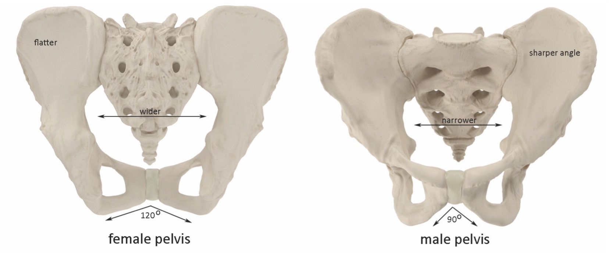
Figure 7-13: Comparison of female and male pelvises
Regardless of the specific method used, the goal of breath support in singing is to provide a stable supply of air at the correct pressure for the desired pitch and loudness. As a general rule, higher and louder tones require greater breath pressure than lower, quieter ones. This, of course, is a bit of an over-simplification of the entire process, which must include actions of the larynx itself. We will return to the issue of pitch and amplitude control in the next chapter following the exploration of laryngeal anatomy.
Hands-On Teaching
Historically, the teaching of singing has often—if not usually—been a “hands on” endeavor. Teachers use touch to confirm and reinforce pedagogic concepts, release unwanted tensions, create biofeedback, or to redirect a student’s thinking through physical distraction. Sometimes the teacher touches the student; at other times, the student is directed to touch the teacher. Touch can be extremely helpful for teaching many aspects of singing, including breathing. But care must be taken. Klein and Schjeide, authors of Singing Technique: How to Avoid Trouble (1981), direct teachers to kneel over their charges—who are lying prone on the floor—vibrating the palm of one hand against the student’s abdomen while holding the jaw or larynx with the other. This unique teaching strategy certainly predates the current litigious climate in the United States concerning issues of sexual harassment. In many public and private schools, teachers are legally prohibited from ever touching their students. Other schools have installed windows in all studio and practice room doors to ensure activities are in clear sight.
Singing is at once an artistic and athletic event. In this regard it is not unlike gymnastics, figure skating or ballet. One can scarcely imagine a ballet teacher being prohibited from touching his pupils. It is expected that he will—or must—move the student’s limbs into the appropriate postures, poses and positions.
Contemporary learning theory strongly supports the importance of touch in assisting students to acquire new skills. Katherine Verdolini (2000) advocates the following steps in the development of a new singing technique:
- Direct the student’s attention to the body in general.
- Direct the student’s attention to the specific body part of interest.
- Model the behavior for the student.
- Manipulate the student’s body so that the target behavior is likely to occur.
She continues: If the student still does not produce the behavior, as an absolutely last resort, proceed to Step 5, which violates the principle of perceptual training:
- Tell the student what to do.
Touch before you tell—many people might have difficulty agreeing with this concept, perhaps for understandable reasons that are unrelated to education. In spite of the importance of touch, the sad truth is that students can misunderstand the best intentions of their teachers. A hand placed on the abdomen in an earnest attempt to assist with breathing technique might be misinterpreted as an unwanted sexual advance. What is the solution? Asking the student’s permission before touching probably is not a reliable solution. Experts in the field of sexual harassment point to the inherent power differential between teacher and student, which makes the most fearful student the least able to object (Rutter, 1989). Some teachers make use of “practice partners,” fellow students who monitor the physical actions of the student in a non-threatening manner. Others only use a hands-on approach when a third person is in the room, such as a pianist. Some teachers even make archival video records of every lesson to document precisely what did and did not occur.
Teachers should remain sensitive to this issue, finding alternatives to touch, when appropriate. Because movements of the abdomen, thorax and back are clearly visible, touch may not be needed for diagnostic purposes. If these motions are concealed under loose clothing, the student can place his own hand on the area of interest; he will feel the movement and the teacher will now be able to see it. But once the diagnosis has been made, touch might be the optimal path to improvement.
Advanced Concepts
Breathing Variations
Most students of singing will study with several different teachers during their lifetimes. When changing teachers, these students often are befuddled by strongly divergent instruction regarding breathing. This is not particularly surprising, for as we observe professional singers, we see variations in breathing technique that extend well beyond the four primary methods that already have been discussed.
The esteemed voice pedagogue Richard Miller cites extensive variations in breathing that often are associated with the country or region in which the singer was trained. According to his findings, breathing might be centered in many locations, including the low, middle or upper back, the pelvis, the low, middle or upper abdomen, or even in the gluteus maximus muscles (Miller, 1977). To better understand this variability, it will be necessary to examine some of the secondary muscles that can contribute to respiration.
Secondary respiratory muscles are distinguished from the primary muscles by the extent of their action. Primary muscles, such as the intercostals and diaphragm, act globally, impacting all or most of the thorax and/or abdomen. Secondary muscles tend to work locally, influencing a much smaller portion of the body. For example, a muscle called the subclavian connects the clavicle to the first rib; on contraction, it has the ability to pull a segment of the thorax into a higher elevation, assisting—to a small degree—with inhalation. Since posture can directly impact breathing, it might also be said that all postural muscles are also secondary muscles of respiration.
Secondary Respiratory Anatomy
Inspiratory muscles of the anterior neck, thorax, and abdomen
Two pairs of muscles lying primarily in the anterior and lateral neck can play significant, albeit secondary, roles in inspiration. The sternocleidomastoids originate from the sternum and clavicle and insert into the mastoid process of the skull, which is a point just behind and below the ear (Figure 7-14).

Figure 7-14: Sternocleidomastoid muscles
On contraction, the upper thorax is lifted, facilitating inhalation and helping to maintain the gentle elevation of the chest often associated with the “noble” posture of singers—a gentle lifting of the thorax with a slight retraction of the shoulders. Thoracic elevation is a secondary function of these muscles, which serve primarily to turn the head from side to side. The scaleni (alternate plural scalenes) lie in a position deep within the neck, posterior to the ste rnocleidomastoids (Figure 7-15). These muscles have three separate portions. The anterior scaleni originate from cervical vertebrae three through six (C3-C6) and insert into the first rib. The middle scaleni cover a larger area, extending from C2 through C7, but also inserting into the first rib. The final muscles, the posterior scaleni, originate from C5 through C7 and insert into the second rib. Like the sternocleidomastoids, the primary function of these muscles is to stabilize and move the neck and head; however, because of their attachments to the upper ribs, contraction can also assist in thoracic elevation for posture and inhalation. All of these muscles are likely to be active in singers who rely on high thoracic elevation during breathing.
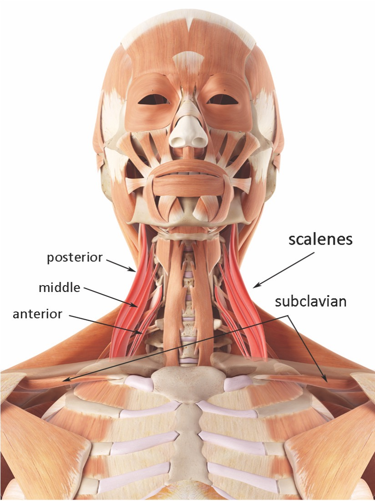
Figure 7-15: Scalene muscles
The internal intercostal muscles have already been discussed as primary muscles of expiration; one portion of these muscles, however, actually has an inspiratory function. Lying immediately adjacent to the sternum within the cartilaginous connection to the ribs, the interchondral portion of the internal intercostals has the ability to subtly elevate the sternum, thereby contributing to inspiration. Studies have shown that this area can be flexed independently of the rest of the intercostal muscles and may be used during forced inhalation (Seikel, 2000).
Four muscle groups found on the outside of the thorax have possible inspiratory functions. The pectoralis major and pectoralis minor are large, fan-shaped muscles that cover a significant portion of the upper anterior and lateral thorax (Figures 7-16). These muscles are exercised through push-ups and bench-presses, which reveals their primary function as muscles of the arms and shoulders. Under most circumstances, these muscles contribute little to breathing;
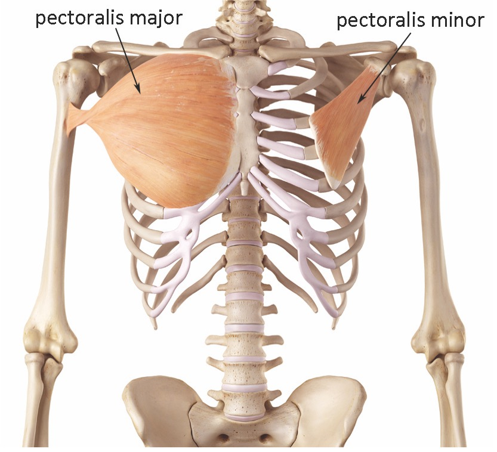
Figure 7-16: Pectoralis major and minor muscles
however, because of their points of attachment, an inspiratory function is possible by elevating the chest toward the clavicle and upper arm. The subclavian muscles are found at the top of the thorax, originating from the underside of the clavicle and running obliquely to insert into the chondral portion (near the sternum) of the first rib (Figure 7-15). Their action is limited to an elevation of the first rib. More significant to singing are the serratus anterior muscles—serratus indicates a saw-tooth or serrated shape (Figure 7-17). Originating on the side of the thorax from ribs one through nine and inserting into the scapula, these muscles are able to help elevate and expand the lateral portion of the thorax and can assist with both thoracic and appoggio breathing.
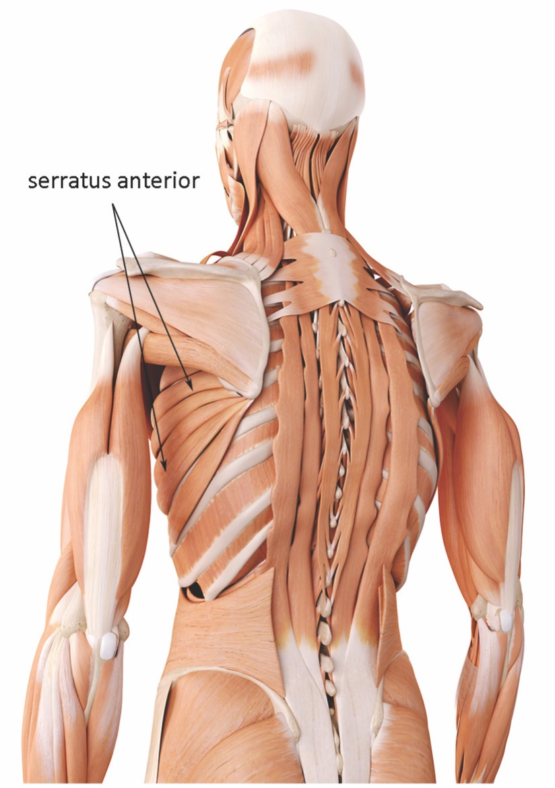
Figure 7-17: Serratus anterior muscles
Expiratory muscles of the anterior neck, thorax, and abdomen
Two additional sets of muscles found inside the anterior thorax serve expiratory functions. The deepest muscles, the innermost intercostals (Figure 7-18), parallel the internal intercostals, but fan out to cover several ribs at a time. They span approximately the same region within the thorax as the external intercostals and are therefore not found in the area adjacent to the sternum in the cartilaginous portions of the ribcage.
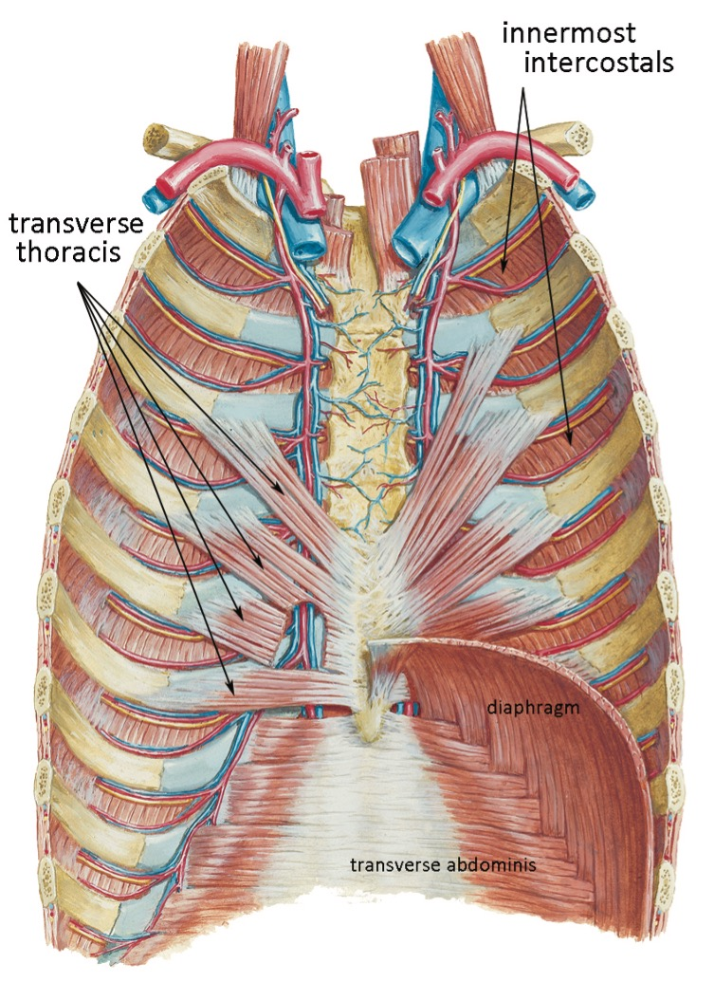
Figure 7-18: Interior of anterior chest wall, showing transverse thoracis and innermost intercostals
Netter medical illustration used with permission of Elsevier. All rights reserved
The transverse thoracis originate from the bottom of the sternum and attach to ribs two through seven. In their lower attachments, these muscles travel transversely, just as their name indicates; connections to the higher ribs, however, occur in a more oblique direction. Contraction depresses the anterior portions of the lower ribs.
Inspiratory muscles of the posterior neck, thorax and abdomen
Several muscles in the neck and back have the ability to raise the thorax, assisting with inhalation. Some act by lifting the shoulders, which tend to take the thorax along with them as they are raised. Others attach directly to portions of the ribcage.
Starting at the top of the spinal column and working from superficial to deep layers, we begin with the trapezius muscles (Figure 7-19). These very large muscles take their name from their trapezoidal shape. They originate from the spinous processes of the second cervical (C2) through twelfth thoracic (T12) vertebrae and fan out to insert into the scapula and clavicle. While also considered to be a muscle of the arm, the trapezius assists respiration by stabilizing the thorax and creating the sensation of neck elongation. Lying underneath the trapezius, the levator scapulae are the primary elevators of the shoulders, which can in turn lift the thorax. Originating from C1 through C4, they extend obliquely to connect with the scapulae at their medial borders (Figure 7-19). The levator scapulae and trapezius are among the many muscles that frequently carry excess tension during everyday life. Chronic tension in this region leads to pain and stiffness, which in turn interferes with efficient breathing for singing.
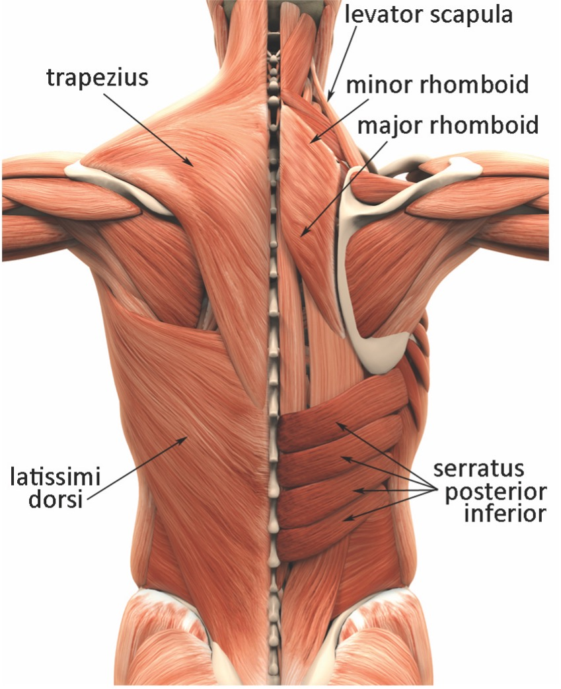
Figure 8-19: Back muscles contributing to respiration
Two additional pairs of shoulder muscles lie under the trapezius and below the levator scapulae: the rhomboideus major and rhomboideus minor muscles. As its name suggests, the rhomboideus minor is the smaller of the two muscles, originating at C7 and T1 to insert into the medial border of the scapula in a position below the levator muscles. The rhomboideus major begins at T2 through T5, inserting again into the medial scapula (Figure 7-19). On contraction, the rhomboids draw the shoulders somewhat back and toward the spine, an action that is exaggerated in the classic military attention stance. Gentle contraction in these muscles will help subtly rotate the shoulders backward to assist in anterior thoracic elevation and maintenance of the noble singing posture.
Continuing deeper into the back, we come to the serratus posterior superior muscles, which lie directly beneath the rhomboids (Figure 7-20).[3] Originating at C7 through T2 and inserting into ribs two through five, these muscles contract to increase elevation of the top portion of the posterior thorax.
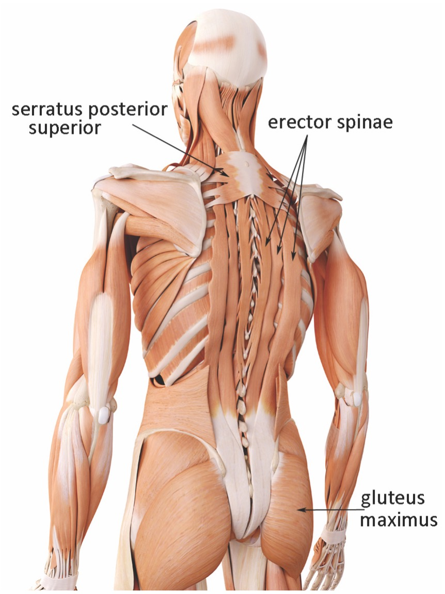
Figure 7-20: Back muscles, deep layers
Three very long muscles are found next, which together are called the erector spinae (individually, they are the spinalis thoracis, longissimus thoracis and illiocostalis lumborum muscles). Extending from the tailbone to the top of the thoracic spine, these postural muscles are responsible for flexing the back in a posterior direction (back-bends) and generally work to maintain our upright posture during everyday life. Finally, twelve additional pairs of inspiratory muscles are found in the deepest layer of back muscle: the levator costarum (brevis and longus) (Figure 7-21). These muscle pairs connect obliquely from the transverse spinal processes to the ribs a short distance away. The brevis portions of the muscles attach from the spine to the rib immediately below from C7 through T11; the longus portions, however, skip the adjacent rib to insert into the second rib below, and only run from T7 through T11. While their range of motion is rather limited, these muscles play a significant role in breathing methods that employ deliberate expansion of the upper back during inhalation.
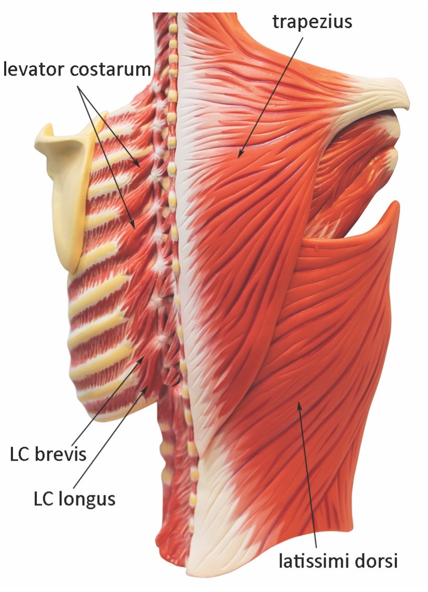
Figure 7-21: Back muscles (two levels of dissection)
Expiratory muscles of the posterior neck, thorax and abdomen
One final set of costal muscles, the subcostals, follow the same oblique course as the internal intercostals, but connect from the lower rib to the second rib above it, thereby skipping alternate ribs. They are located in the posterior thorax near the spine, occupying the region from approximately 1:00 to 2:00 and 10:00 to 11:00. The subcostals may be considered antagonists to either the innermost intercostal or the levator costarum muscles.
Although they are the largest muscles found in the back, the latissimi dorsi actually are arm muscles (Figure 7-21). Originating from the sacral, lumbar and lower thoracic vertebrae, the muscle arises to insert into the humerus, which is the upper bone of the arm. On contraction the arm is pulled downward; but if the arms are fixed in position overhead, the body is drawn upward (as in pull-up exercises). Because the latissimi muscles cover a large area of the thorax, their contraction also is able to contribute to chest compression during forced exhalation. Singers who rely on expansion in the middle and lower back as part of breath support must consciously relax these muscles during inhalation.
Lying underneath the latissimi dorsi are four pairs of muscles called the serratus posterior inferior, which may be seen as the antagonistic counterparts to the serratus posterior superior muscles (Figure 7-19, page 141). These muscles originate from the eleventh thoracic (T11) through third lumbar (L3) vertebrae, and course obliquely upward to insert into ribs seven through twelve, which are depressed upon contraction.
Many singers and teachers attribute an expiratory function to one additional muscle pair in the posterior plane: the gluteus maximus (Figure 7-20). These muscles, which are the largest by mass in the human body, cover the outside of the sacrum and the iliac bones of the pelvis. In this position, they have no actual ability to compress the contents of the abdomen to assist in exhalation; therefore, they should not be considered legitimate expiratory muscles. Many people, however, contract the internal pelvic muscles simultaneously with the glutes. These muscles, including the levator ani (which forms the anal sphincter) and the rectococcygeus (rectum to coccyx) form a structure that is sometimes called the pelvic floor (or pelvic diaphragm), which encloses the non-bony portions of the pelvis (Figure 7-22).
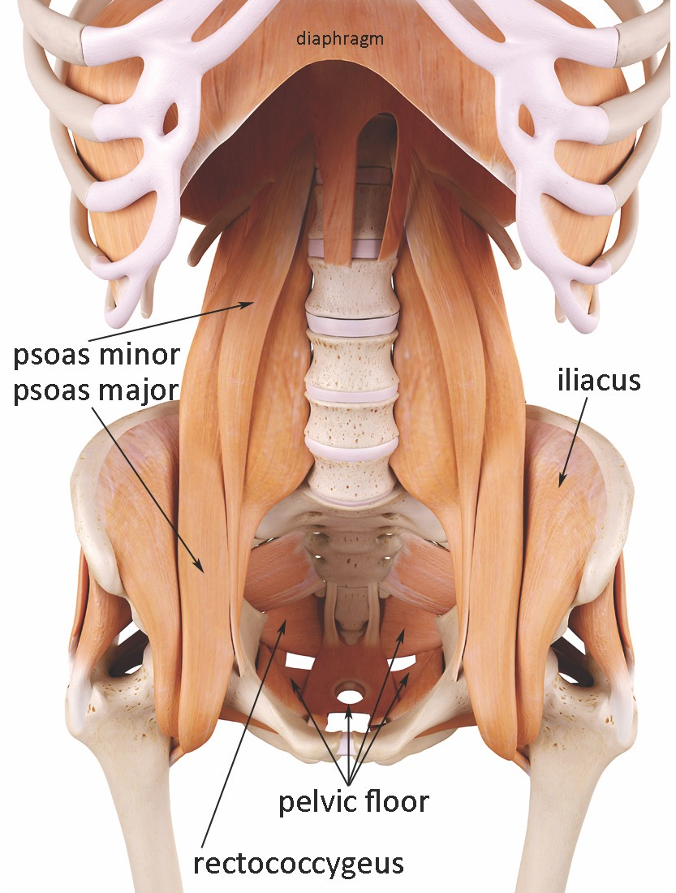
Figure 7-22: Muscles of the lower back and pelvis
Tension in these muscles might assist exhalation by ensuring that abdominal contraction moves the viscera upward rather than downward, just as the quadratus lumborum prevents the viscera from being displaced toward the back. There is one other possible benefit from gluteal contraction—it can’t hurt anything. Many singers struggle with excess tension in abdominal or thoracic muscles. Unfortunately, this tension has two possible side effects: restricting inhalation by failing to release at the appropriate time; and creating excess pressure during exhalation through over-strenuous contraction of the expiratory muscles. Perhaps singers who strongly squeeze their gluteal muscles are diverting tension away from other areas where it would be more problematic.
Postural muscles that can impact breathing
Two additional muscle pairs are found in the posterior abdomen, called the psoas major and psoas minor (Figure 7-22). As was the case with the glutes, this author has encountered many singers and teachers who attribute a primary expiratory function to these muscles. This is curious in light of the fact that they are functionally considered to be muscles of the legs. Originating from the lumbar spine and inserting into the thigh, their contraction lifts the leg and/or tilts the pelvis. Since neither of these actions is likely to result in abdominal compression, they are more appropriately classified as postural, rather than respiratory, muscles. This applies to the illiacus muscles as well, which originate on the iliac crest, run behind the inguinal ligament, and finally insert into the upper thighbone.
Respiratory Physiology: breath capacities
How much air do the lungs actually hold? This is an important question, as our lungs function like the gas tank in a car; they are not the power source, but serve as a storage facility for the air that drives vocal fold vibration. Lung capacity is highly variable, largely dependent on physical stature. As a rule of thumb, tall people with broad thoraxes have larger lung capacity than shorter people with narrow thoraxes. Fortunately, our bodies tend to be proportional throughout: if you have big lungs, you probably also have big vocal folds. It turns out that big vocal folds require more airflow to maintain vibration than do smaller folds; as a result, a person whose lungs only hold 3 liters usually can sustain phrases as long—if not longer—than a person with twice the breath capacity.
Respiratory physiologists define several aspects of lung capacity, which we will explore individually:
- Total Lung Capacity (TLC). As the name implies, this is the maximum amount of air that can fit in the lungs. Adult women typically have a TLC in the range of 3-5 liters; those who are exceptionally tall or short can fall outside this range. Adult men usually vary from 4-7 liters or more, again with exceptions based on physical stature.
- Residual Volume (RV). We are not able to access 100% of TLC; some air always remains in the lungs even after we have exhaled as much air as possible (the only time this residual air is exhausted is from an injury, such as a collapsed lung, or at death). Once again, RV varies according to physical size over a typical range of 1-2 liters. There is some evidence that singers learn to reduce their residual volume as compared to the general population, leaving them with more air available to power the voice during long phrases (Large, 1971).
- Vital Capacity (VC). To determine the maximum amount of air that actually can be exhaled, subtract the residual volume from total lung capacity. The result is our vital capacity, which varies in the same manner with physical size. VC is our working capital—the gas in our tank that helps us make it to the end of the phrase.
- Tidal Volume (TV). During each respiratory cycle, air is inhaled and exhaled. The amount of air that is exchanged is called our tidal volume. TV is variable not just according to physiognomy, but also by activity. At rest, it often falls as low as a half-liter per breath. But at high levels of exertion—or singing extremely long musical phrases—it can approach 100% of vital capacity.
Breath Pressure by the Numbers
How much pressure can the pulmonary system generate and how much pressure is actually required for phonation? To answer this question, we need to understand a little about measurement standards for pressure. The pressure exerted by compressed air, as in the respiratory system, is essentially a force applied perpendicularly to a surface. This pressure is measured with units called Pascals (abbreviated Pa), named after a seventeenth-century French scientist. The force represented by 1Pa is extremely small, so measurements are often expressed in terms of kilopascals (kPa), which are a thousand times stronger. To get a general sense of the amount of pressure in 1kPa, imagine the force of gravity distributing the weight of an average-sized apple over a 10cm2 surface (10cm2 is about three-quarters the size of a standard CD jewel case).
Scientists have determined that air pressure during speech typically varies over a range of about 0.3 to 3kPa. In very loud singing, pressures might reach as high as 6kPa. The maximum pressure that can be generated by the pulmonary system, however, might be 10kPa or more (Titze, 1994). This has direct pedagogical implications. Obviously, the pulmonary system is capable of generating significantly more pressure than is required for phonation. Breath support, therefore, becomes an exercise in minimizing as well as regulating breath pressure.
The constantly changing volume of air within the lungs complicates pressure regulation. Following a maximal inhalation—as might be needed for a long, strenuous musical phrase—the lungs of an average-sized adult will contain four to five liters of usable air. At this point, elastic recoil alone can probably generate sufficient breath pressure for most singing requirements. As the quantity of air is reduced during exhalation, more and more muscles must be activated to propel the breath out of the body. Breath support becomes a balancing act. In the early stages of a musical phrase, muscular antagonism is used to limit the amount of pressure in the well-filled lungs. As the air is depleted, however, increasing amounts of abdominal and thoracic contraction are required to maintain a steady breath stream of sufficient flow and pressure. Teachers can help their students master this technical issue by using vocal exercises of extended duration that require continued breath support and control until depletion of vital capacity.
Conclusion
As you already knew before you started reading this chapter, the human body is a remarkably complex machine. In total, we have looked at some thirty-three muscles that contribute in some way to breathing and posture. These, of course, are not equally important to every singing technique. At a minimum, singers and teachers should remember the functions, locations and names of those muscles they use most regularly. This would likely include the eight primary muscles—diaphragm, external intercostals; internal intercostals, rectus abdominis, external and internal oblique abdominis, transverse abdominis, quadratus lumborum—and might include several of the secondary muscles.
Understanding the anatomy and physiology of respiration might not change the way we breathe for singing; it will, however, help us understand why we do the things we do. More importantly, it will help inform the technical recommendations teachers make to students.
_________________
Review Questions
- Identify the primary muscles of inspiration.
- Identify the primary muscles of expiration.
- How far does the diaphragm move when it contracts?
- What is meant by vital capacity?
- What is thoracic breathing?
- What is the difference between breath support and breath control?
- What is muscular antagonism?
- How is muscular antagonism used during breathing for singing?
- What is the difference between respiratory muscles classified as primary versus secondary?
- How much pressure can the pulmonary system develop and how much is required for phonation?
Answers
- diaphragm, external intercostal muscles
- internal intercostals, rectus, external oblique, internal oblique and transverse abdominis, quadratus lumborum
- 3 to 5cm
- the maximum amount of air that can be expired after taking a full breath
- centering breath expansion in the lower thorax using muscular antagonism between the internal and external intercostals for breath support
- support is the relationship between inspiratory and expiratory muscles used to regulate subglottal air pressure; control is the release of air through the glottis
- two or more muscles pulling in opposing directions to control movement
- to balance breath pressure through the opposition of inspiratory and expiratory muscles
- primary muscles act globally; secondary muscles act locally
- about 10 kPa. Phonation requires about 0.3 to 6 kPa
________________________
Footnotes
-
The thorax is flexible; a cage is not. Therefore, many pedagogues strongly prefer to avoid the term ribcage. ↑
-
Readers who doubt this assertion might perform a simple experiment. Obtain a lightweight plastic bag that will hold at least four liters. Exhale as much air as possible into this bag using clavicular, thoracic, abdominal and balanced breathing methods. The results are likely to be surprising. For more accurate results, you can visit a voice lab that that is equipped to measure respiratory capacity. For many years, students in the author’s voice science classes have completed lab assignments to demonstrate the use of spirometry by breathing with different techniques. Over 90% of the time, clavicular breathing yields the largest capacity, often by a half-liter or more. ↑
-
There are several other muscles in this image that you now should be able to identify—try it! ↑